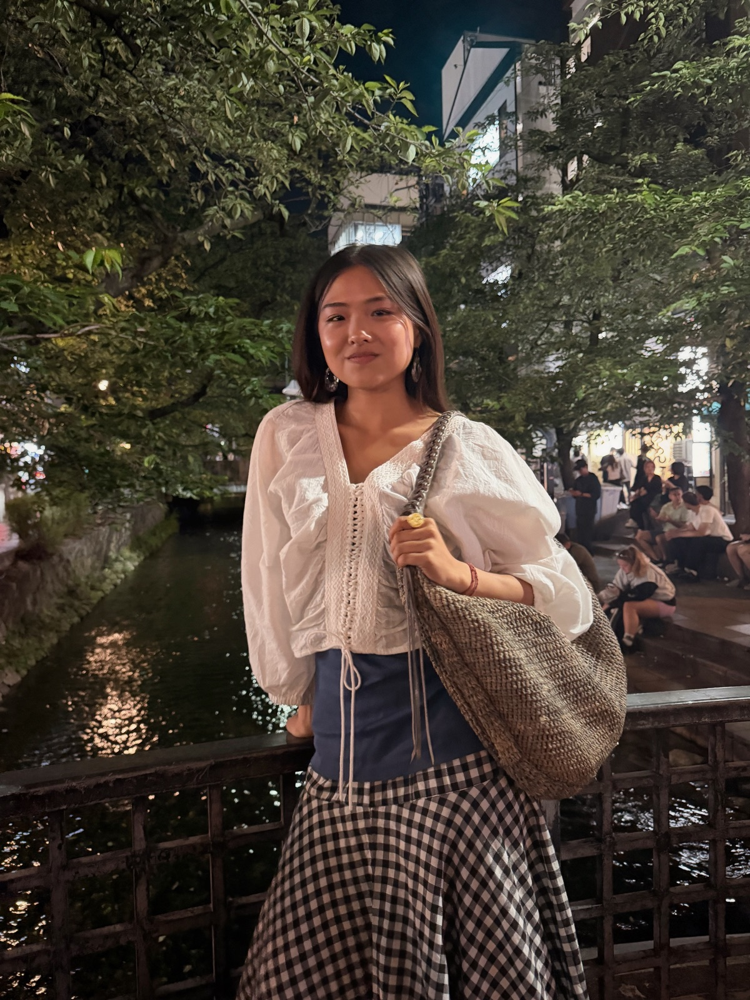

Hello, I’m Sarah.
I am a multidisciplinary designer and communications strategist working across visual storytelling, content strategy, and experiential marketing. Rooted in a background in Integrated Design and Media from New York University, I specialize in taking nuanced, complex ideas and shaping them into clear, engaging narratives that connect with real people.
My day-to-day work lives at the crossroads of brand narrative and audience psychology. Over the past year in gallery communications and growth, I have focused on designing high-impact digital campaigns, editorial collateral, pitch decks, and multimedia content that help cultural and creative initiatives expand their reach. Whether producing short-form video stories, laying out bespoke presentations, or organizing public panels and collaborative events, I care deeply about the craft: creating intuitive systems where typography, visuals, and clear words work together effortlessly.
Alongside my communications work, I keep an active tactile art and design studio exploring functional forms, material research, and organic geometry. Having hands in both the digital and physical worlds keeps my eye sharp, curious, and grounded.
What I Focus On
- Brand Storytelling & Collateral Design Shaping clear, evocative narratives through presentation decks, editorial one-pagers, and digital campaigns that communicate value with visual restraint and intent.
- Audience Engagement & Experience Design Producing community gatherings, live panels, and cross-functional events that bring people into meaningful dialogue with ideas and organizations.
- Multimedia & Digital Strategy Building cohesive visual identities across video, social channels, and web platforms—translating dense information into accessible, memorable stories.
I am always drawn to teams, studios, and organizations that value genuine curiosity, clear communication, and thoughtful design. If you are building something meaningful, exploring creative collaborations, or simply want to share a conversation, I would love to connect.
Get in Touch